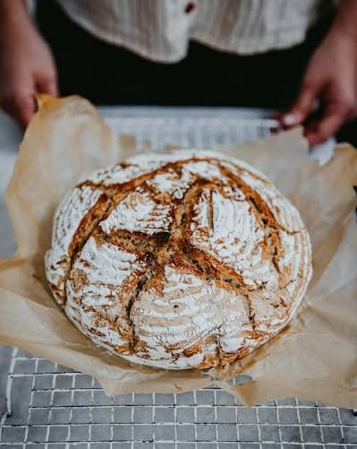
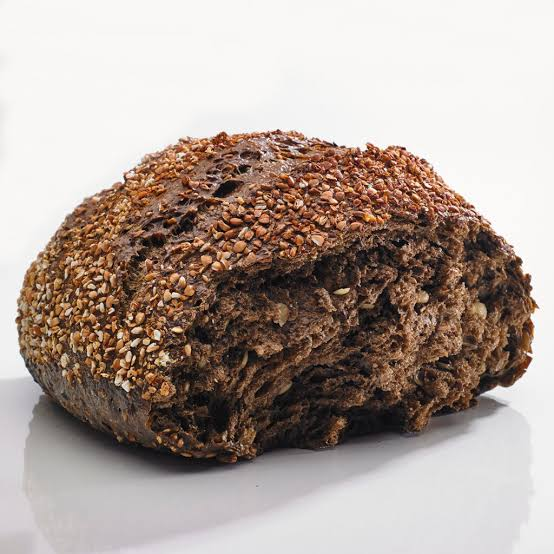
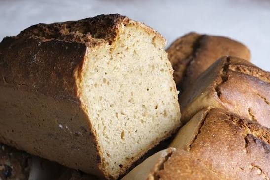
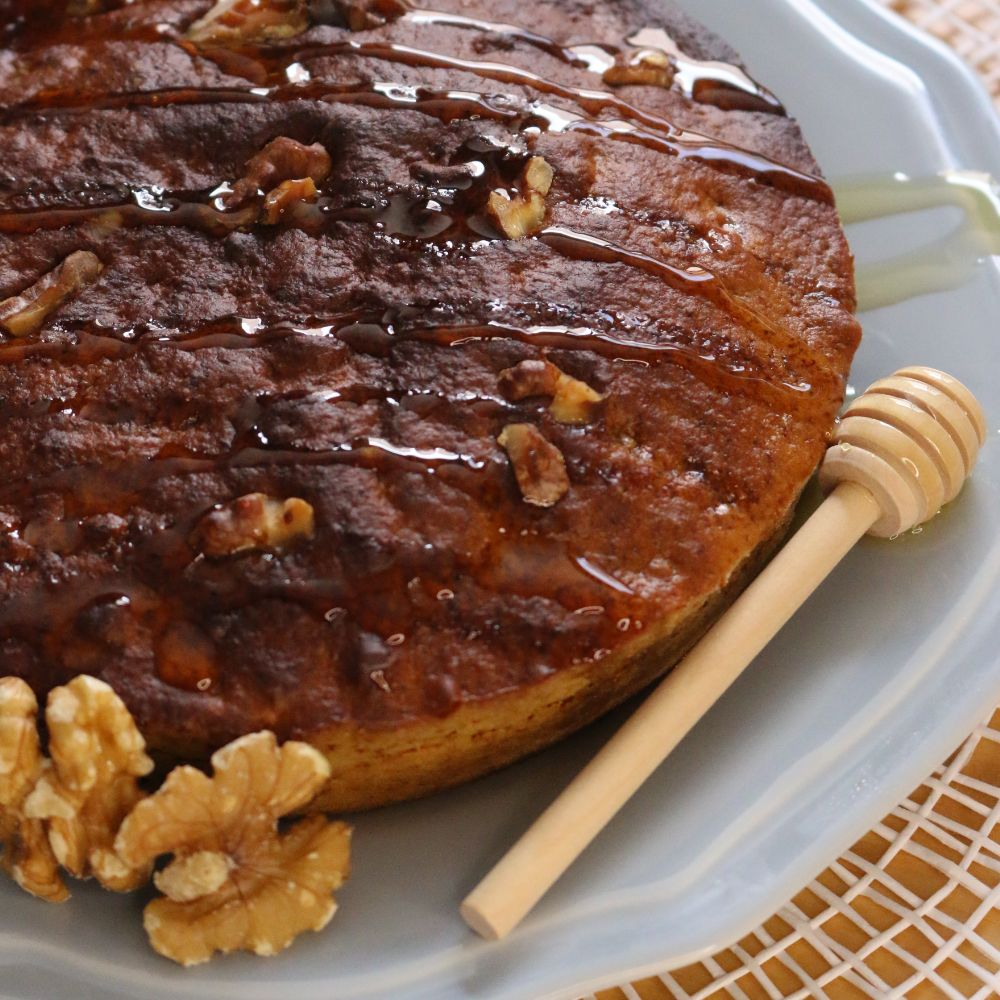

Le Best-SellerNotre pain signature. Farine de blé T80 sur meule de pierre, levain naturel de l'exploitation et fermentation lente de 24 heures. Croûte épaisse et mie alvéolée.
Chaque jour, nous sélectionnons les meilleures farines locales et biologiques pour vous proposer des pains au goût authentique et riches en nutriments.

Le Best-SellerNotre pain signature. Farine de blé T80 sur meule de pierre, levain naturel de l'exploitation et fermentation lente de 24 heures. Croûte épaisse et mie alvéolée.

Un pain noir intense et gourmand. Mélange de farines de seigle et d'épeautre, enrichi de graines de lin brun, de tournesol et de courge grillées.

Faible en GlutenIdéal pour les digestions sensibles. Confectionné exclusivement à partir de farine de pur petit épeautre (engrain ancestral). Une mie dense aux douces notes de noisette.

Le compagnon idéal de vos plateaux de fromages. Notre base de pâte au levain agrémentée de généreux cerneaux de noix du Périgord et d'une touche de miel de fleurs local.